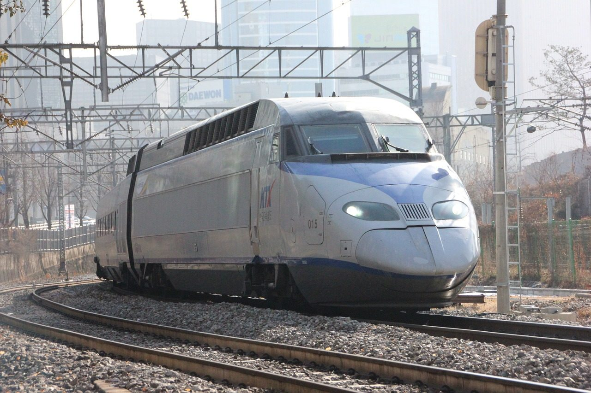
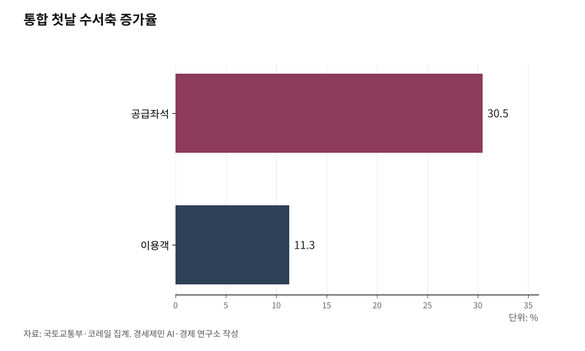

[KTX-SR 통합⓵] 예견된 성공, 고속철 통합... 남은건 지주회사
통합 첫날 이용객 21만3000명, 수서축 좌석 30.5% 증가
자연독점 산업에 경쟁 설계, 10년 만에 종료
선로 증설 없이 좌석 1만5679석 확보
코레일·에스알 통합, 국가철도공단 존치
수서축 좌석 30.5% 증가
AI경제저널=김갑봉 기자 | 국토부와 코레일 집계를 보면 통합 첫날 고속철도 이용객은 21만3000명으로 지난해 같은 날보다 7.9% 늘었고, 공급좌석은 25만3000석으로 6.3% 늘었다. 정기권 이용객은 뺀 값이다. 효과는 수서축에 몰렸다. 공급좌석이 6만5000석으로 30.5% 늘어난 사이 이용객은 6만4000명으로 11.3% 느는 데 그쳤다. 좌석 증가폭이 이용객 증가폭보다 세 배 가까이 크니, 표를 구하기 어렵던 축에서 예매 여건이 그만큼 풀렸다.

운임도 내렸다. KTX 운임을 SRT 수준으로 맞춰 평균 10% 낮춘 결과 서울에서 부산까지 5만9800원이 5만4400원이 됐고, 용산에서 광주송정까지는 4만6800원이 4만2000원이 됐다. 첫날 사고나 장애는 없었다.

선로는 한 벌, 경쟁 아닌 분할
철도는 자연독점 산업이다. 선로는 한 벌만 깔리고 두 벌을 깔면 그대로 낭비다. 선로와 신호와 역에 드는 고정비가 크고 이용자가 늘수록 한 사람을 더 실어 나르는 비용이 떨어지니, 규모의 경제가 강하게 걸린다.
에스알은 2013년 경쟁을 유도하고 비효율을 줄인다는 취지로 섰다. 그러나 에스알은 선로를 갖지 않은 채 국가철도공단이 지은 선로를 빌려 쓰고, 유지관리는 코레일에 맡기고, 그 값을 선로사용료로 냈다. 사용료가 SRT 매출의 50%에 이르고 KTX도 34%다. 경쟁이 아니라 분할이었다. 같은 선로 위에서 두 회사가 시간대를 나눠 쥐는 동안 중복 비용은 늘고 배분은 최적에서 멀어졌다.
늘어난 밀도, 402회와 955석
이번 통합이 살린 자리는 밀도의 경제다. 정해진 선로 위에 열차를 더 넣고 한 편성에 더 많이 실으면 고정비를 나눠 지는 사람이 늘어 단위 비용이 떨어진다.
밀도는 두 축으로 잰다. 하나는 선로용량으로, 하루에 열차를 몇 회 넣느냐를 본다. 통합으로 주중 379회가 402회, 주말 431회가 457회가 됐다. 다른 하나는 편성 수송력으로, 한 편성에 몇 명을 싣느냐를 본다. 선박으로 치면 선복량에 해당한다. 수서역에는 955석짜리 대용량 편성을 넣었고 두 열차를 잇는 중련 운행을 넓혔다.
두 축을 곱한 결과가 주중 1만5679석, 주말 1만7655석이다. 선로는 한 치도 늘리지 않고 얻은 좌석이고, 경쟁체제 10년이 쓰지 못한 자리가 바로 여기다. 2027년부터는 KTX-산천보다 편성당 90석 많은 신형 31편성이 들어오고 평택에서 오송까지 2복선화도 이어진다.
통합 절반, 남은 국가철도공단
묶인 쪽은 열차를 굴리는 두 회사이고, 선로를 짓고 관리하는 국가철도공단은 그대로 남았다. 구조는 이렇게 돈다. 공단이 선로를 지으면 코레일이 그 위를 달리며 사용료를 내고, 공단은 걷은 돈으로 유지보수를 다시 코레일에 위탁한다. 돈은 도는데 책임은 흩어진다.
미즈타니와 우라니시는 2013년 유럽과 동아시아 경제협력개발기구 회원국 23개 나라 철도조직 30곳을 1994년부터 2007년까지 분석했다. 결론은 갈렸다. 열차가 뜸한 망에서는 선로와 운영을 나누면 비용이 줄지만, 촘촘한 망에서는 나눌수록 비용이 늘었다. 두 조직 사이 조율 비용이 경쟁의 이득을 삼키기 때문이고, 한국은 촘촘한 쪽에 선다.
조직 안쪽도 갈려 있다. 정부는 2026년 6월 30일 공공기관운영위원회에서 코레일 자회사 5곳을 3곳으로 합치기로 의결했다. 그런데 고속열차에는 코레일 소속 열차팀장과 자회사 소속 승무원이 함께 타고, 안전 권한은 팀장에게 있고 승무원은 협조 역할에 머문다. 철도노조 코레일관광개발지부는 통합 첫날 서울역에서 기자회견을 열어 이 구조를 문제 삼았다.
지주회사, 독일이 간 길
독일이 먼저 갔다. 1994년 철도개혁에서 두 국철이 진 662억 마르크를 나라가 연방철도자산기구로 떠안았고, 그 위에 도이체반 지주를 세워 선로 회사와 운영 회사를 한 지붕 아래 두되 회계를 나눴다. 열차 운행 거리는 1994년 8억7500만에서 2022년 11억3300만으로 29% 늘었다.
반대 사례도 또렷하다. 영국은 1993년 선로와 운영을 잘게 쪼갰다가 잇단 사고와 파산을 겪었다. 2025년 11월 5일에는 선로와 운영을 그레이트브리티시레일웨이스(GBR)라는 공공기관 하나로 다시 묶는 철도법안을 하원에 냈다. 쪼갠 지 30년 만의 회귀이고, 그 법안은 2026년 6월 보고 단계까지 올라갔다.
한국이 갈 길은 코레일과 에스알과 국가철도공단을 한 지주회사로 묶는 자리에 있다. 조건은 셋이다. 누적 부채를 공적으로 정리하고, 한 지붕 아래서도 회계를 나눠 독립 규제기관을 세우고, 역세권을 비롯한 자산으로 철도가 스스로 벌게 연다.
이번 통합은 첫 단계다. 운영을 합쳐 밀도를 살렸으니, 남은 일은 선로를 짓는 쪽과 굴리는 쪽을 한 책임 아래 두는 데 있다. 그다음이 인프라다.
※ 이 기사는 AI 프로그램 클로드를 활용해 작성했습니다.
참고문헌
· "내달 1일부터 KTX·SRT 통합 운행…요금↓·좌석 수↑", 대한민국 정책브리핑(국토교통부), 2026.8.31., 2026.9.8. 직접 열어 확인. https://www.korea.kr/news/policyNewsView.do?newsId=148970889
· 이다원, "고속철도 통합하니 수서 좌석 30% 늘었다…첫날 21.3만명 이용", 이데일리, 2026.9.2., 2026.9.8. 직접 열어 확인. https://www.edaily.co.kr/News/Read?newsId=04470646645576184
· 김지윤, "9월부터 KTX·SRT 통합 운영…운임 평균 10% 인하·좌석 주 11만6000석 확대", 경향신문, 2026.8.6., 2026.9.8. 직접 열어 확인. https://www.khan.co.kr/article/202608061131001
· 엄재희, "10년 민영화 논란 끝, 통합 KTX 달린다", 매일노동뉴스, 2026.9.2., 2026.9.8. 직접 열어 확인. https://www.labortoday.co.kr/news/articleView.html?idxno=236549
· 김현재, "코레일 자회사 5곳→3개로 통합한다…'고객서비스·철도안전 강화'", 국토일보, 2026.6.30., 2026.9.8. 직접 열어 확인. http://www.ikld.kr/news/articleView.html?idxno=336829
· Mizutani, F. & Uranishi, S., "Does Vertical Separation Reduce Cost? An Empirical Analysis of the Rail Industry in European and East Asian OECD Countries", Journal of Regulatory Economics 43(1), 2013, 31-59쪽. 2026.9.8. 서지사항 확인. https://link.springer.com/article/10.1007/s11149-012-9193-4
· Deutsche Bahn AG, "30 Years of Rail Reform in Germany", 2024. https://wettbewerbssymposium.deutschebahn.com/resource/blob/12654720/84fa396e57166d3ea7ebdf0d3fa22df9/30-years-of-the-Rail-Reform-data.pdf
· Michael Benson, "Railways Bill 2024-26: Progress of the bill", House of Commons Library, 2026.5.22. 발행, 2026.7.8. 갱신, 2026.9.8. 직접 열어 확인. https://commonslibrary.parliament.uk/research-briefings/cbp-10538/
· House of Commons Library, "Railways Bill: Research Briefing CBP-10386", 2025.12.4. https://commonslibrary.parliament.uk/research-briefings/cbp-10386/
· 철도경제신문, "KTX가 무궁화·새마을보다 비싼 이유… '선로사용료'의 비밀". https://www.redaily.co.kr/news/articleView.html?idxno=16094
· 김갑봉, "[127년 한국철도⑦] 영국은 쪼개 실패했고 일본은 합쳐 살았다… 한국의 길은 독일에 있다", 2026.7.4, 경세제민 AI·경제 연구소 브리핑
· 김갑봉, "[127년 한국철도⑯] 코레일·SR·철도공단, 독일식 지주회사로 묶어 다시 짠다", 2026.7.21, 경세제민 AI·경제 연구소 브리핑
사진 출처
· [대표사진] zheng2088, "Korean KTX.jpg", 위키미디어 공용, CC0, https://commons.wikimedia.org/wiki/File:Korean_KTX.jpg
※ 이 기사는 인공지능을 활용해 작성했습니다.
관련기사
- [에세이] 공부와 아부와 치부, 그리고 정읍역의 30초
- [KTX-SR 통합⓶] KTX 느는 동안, 무궁화는 36% 줄고 새 차는 2029년
- [KTX-SR 통합⓷] 화물고속기관차 등장, 서울-부산 논스톱 3시간 반
- [환황해 철도망⑧] 열차페리 1~3년, 해저터널 10년 뒤... 첫 단추는 인천신항 인입선
저작권자 © AI경제저널 무단전재 및 재배포, AI학습 및 활용 금지